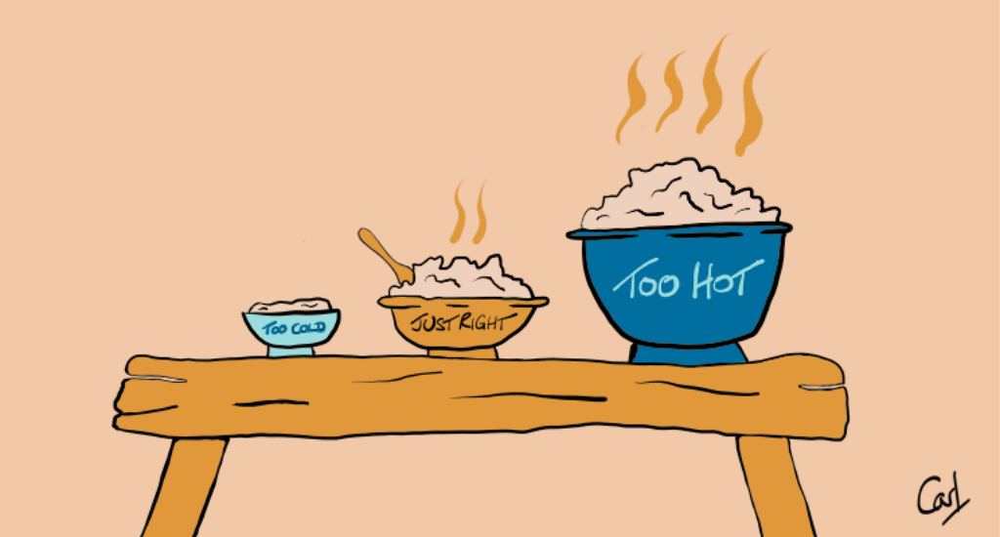
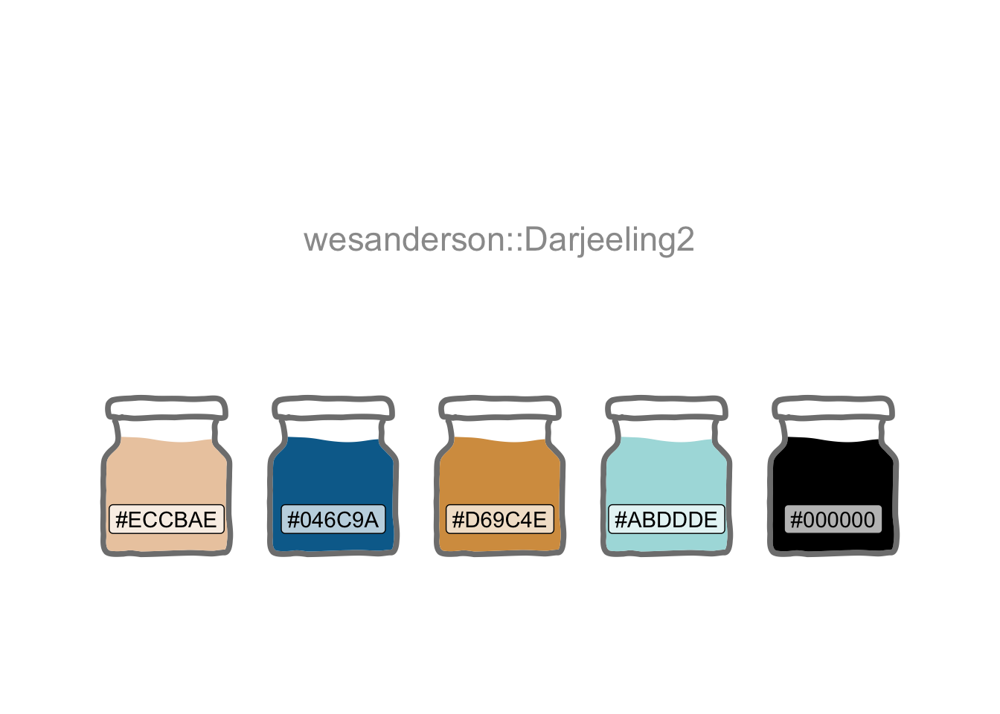
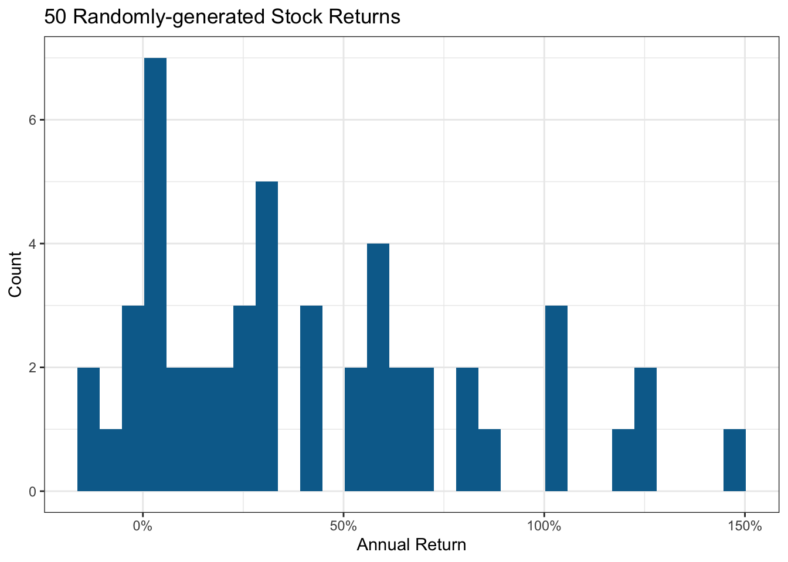
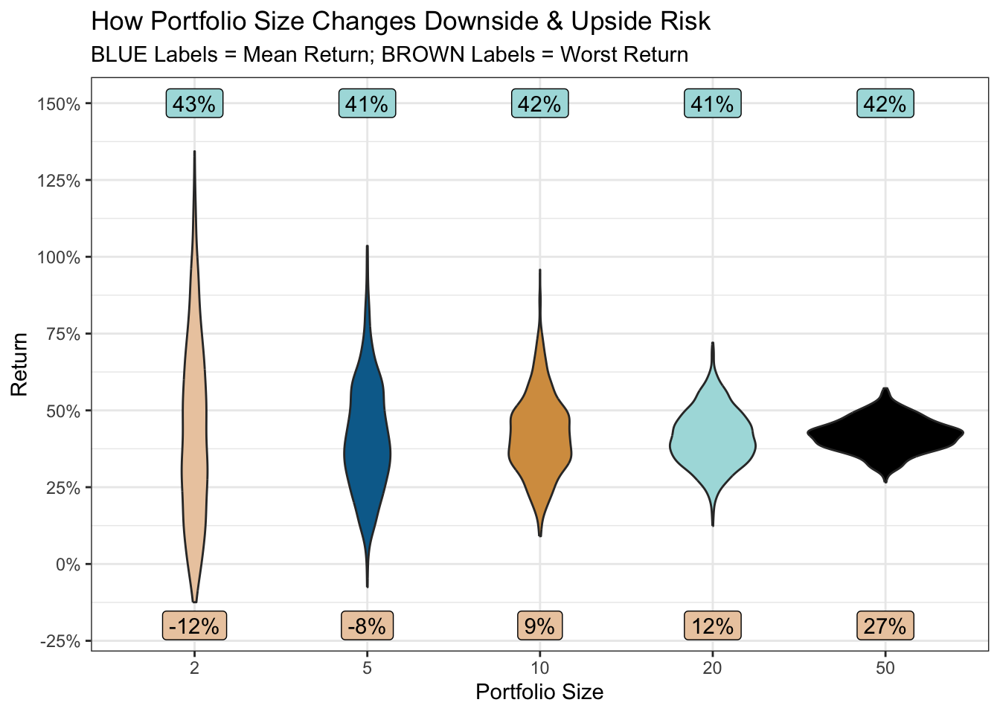

library(conflicted)
library(tidyverse)
conflict_prefer_all("dplyr", quiet = TRUE)
library(scales)
library(truncnorm)
library(paletteer)
library(ggfoundry)
library(usedthese)
conflict_scout()The Goldilocks Principle
R
sample distribution
simulation
Simulating stock portfolio returns inspired by bowls of porridge left by three bears

The Goldilocks principle has its origins in a children’s story about a girl who tastes the bowls of porridge left by three bears. She prefers the one that is neither too hot nor too cold, but is just right.
When it comes to investing in stocks, how many is “just right”?
I’ll use this palette.
theme_set(theme_bw())
pal_name <- "wesanderson::Darjeeling2"
pal <- paletteer_d(pal_name)
display_palette(pal, pal_name)
Suppose the average stock market return is around 10%. And you do extensive research, burning the midnight oil, poring over stock fundamentals. Or perhaps you develop a cool machine learning model. And you arrive at a list of 50 promising stocks you feel confident would, on average, deliver well-above-market returns.
I’ll create some randomly made up stocks with an average return close to 40%. Some will tank due to events one could not foresee; I’ll allow some to lose up to 20%. Similarly, some could generate exceptional returns.
set.seed(123)
stock_data <- tibble(
stock = chartr("0123456789", "abcdefghij", sample(50)),
return = rtruncnorm(50, a = -0.2, mean = 0.4, sd = 0.5)
)
mean(stock_data$return)[1] 0.4200244Here’s the resultant distribution I’ll use to assess the impact of portfolio size. Stock markets are fairly close to a normal distribution, albeit with fatter tails due to a few extreme outcomes.
stock_data |>
ggplot(aes(return)) +
geom_histogram(fill = pal[2]) +
scale_x_continuous(labels = label_percent()) +
labs(title = "50 Randomly-generated Stock Returns",
x = "Annual Return", y = "Count")
Now suppose you share 2 stocks, selected at random, with 1,000 of your social network friends (selecting a different pair of stocks for each friend). Will they all still be friends a year later? And if you repeated the same scenario with portfolio sizes of 5, 10, 20 and 50 stocks per person, would that change the outcome? Let’s see.
portfolio <- \(x) {
stock_data |>
slice_sample(n = x, replace = TRUE) |>
summarise(
portfolio_return = mean(return),
portfolio_size = x
) |>
bind_rows()
}
set.seed(456)
portfolios <-
map(c(
rep(2, 1000),
rep(5, 1000),
rep(10, 1000),
rep(20, 1000),
rep(50, 1000)
), portfolio) |>
list_rbind() |>
mutate(portfolio_size = factor(portfolio_size))
mean_returns <- portfolios |>
summarise(
mean_return = mean(portfolio_return),
min_return = min(portfolio_return),
.by = portfolio_size
)
portfolios |>
ggplot(aes(portfolio_size, portfolio_return, group = portfolio_size)) +
geom_violin(aes(fill = portfolio_size), show.legend = FALSE) +
geom_label(aes(portfolio_size, 1.5,
label = percent(mean_return, accuracy = 1)
),
data = mean_returns, fill = pal[4],
) +
geom_label(aes(portfolio_size, -0.2,
label = percent(min_return, accuracy = 1)
),
data = mean_returns, fill = pal[1],
) +
scale_y_continuous(labels = label_percent(), breaks = breaks_extended(9)) +
scale_fill_manual(values = pal[c(1:5)]) +
labs(
x = "Portfolio Size", y = "Return",
title = "How Portfolio Size Changes Downside & Upside Risk",
subtitle = "BLUE Labels = Mean Return; BROWN Labels = Worst Return"
)
So, for all portfolio sizes, the average return across your 1,000 friends is around 42%.
But, when the portfolio size is 2, you may be erased from a few Christmas card lists (or worse). If one of those two stocks has an extreme negative outcome, there’s little else in the portfolio to dissipate the effect. As the portfolio size increases, the risk (downside and upside) dramatically reduces.
But is more always better? Well, irrespective of whether your list of promising stocks resulted from desk research or a model, there will be a varying degree of confidence in the 50. A machine learning model, for example, would assign class probabilities to each stock.
So by picking a smaller number, one can select those in which one feels most confident, or which have the highest class probability. And by picking a larger number (ideally across different sectors to further reduce risk) one can weaken the effects of a bad egg or two caused by events no research or model could foresee.
So perhaps the answer is to pick a worst-case scenario one would be prepared to accept. In the plot above, accepting a small chance of only a 12% return (still better than the historical average market return), might provide the “just right” portfolio. A portfolio of a manageable size, focused on your highest-confidence stocks, and with pretty good odds of the desired return.
R Toolbox
Summarising below the packages and functions used in this post enables me to separately create a toolbox visualisation summarising the usage of packages and functions across all posts.
used_here()| Package | Function |
|---|---|
| base | c[2], chartr[1], factor[1], library[7], mean[3], min[1], rep[5], sample[1], set.seed[2] |
| conflicted | conflict_prefer_all[1], conflict_scout[1] |
| dplyr | bind_rows[1], mutate[1], slice_sample[1], summarise[2] |
| ggfoundry | display_palette[1] |
| ggplot2 | aes[5], geom_histogram[1], geom_label[2], geom_violin[1], ggplot[2], labs[2], scale_fill_manual[1], scale_x_continuous[1], scale_y_continuous[1], theme_bw[1], theme_set[1] |
| paletteer | paletteer_d[1] |
| purrr | list_rbind[1], map[1] |
| scales | breaks_extended[1], label_percent[2], percent[2] |
| tibble | tibble[1] |
| truncnorm | rtruncnorm[1] |
| usedthese | used_here[1] |